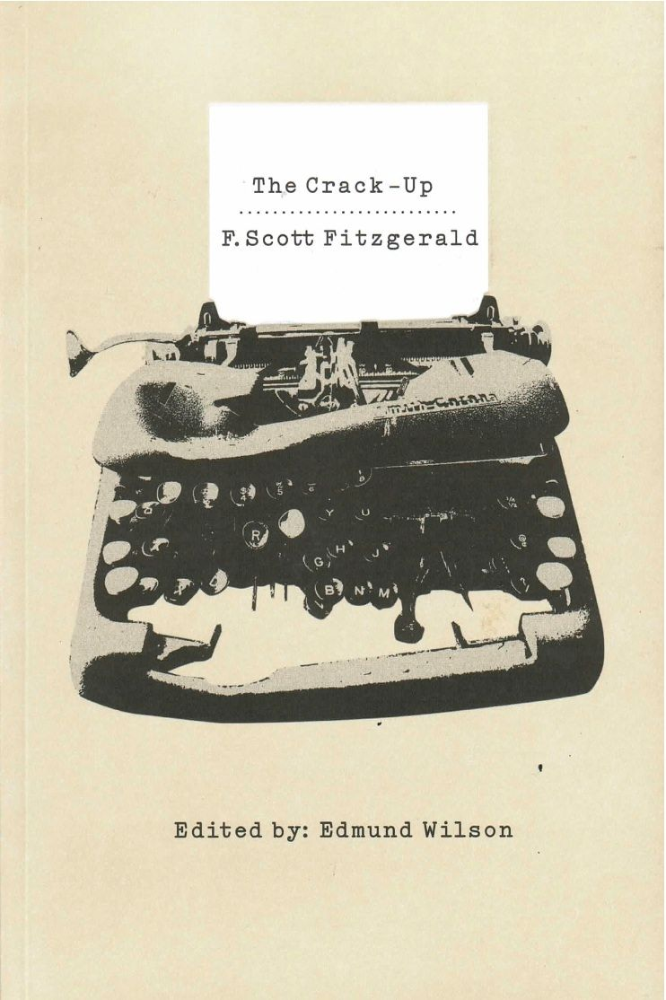
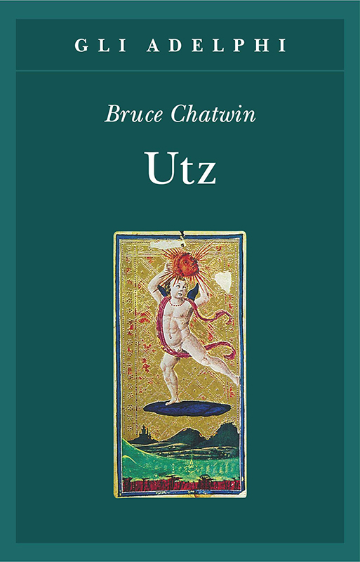
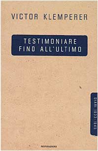
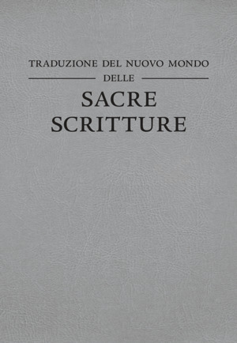

59:49 · 8 OPERE
Breve viaggio nell'inconcepibile.
Il filo del discorso
Un passo di Fitzgerald sulle tensioni che l’intelligenza può sostenere introduce una lettura polemica della comunicazione durante la pandemia. Dr Divago descrive quella che chiama società del contrario, discutendo televisione, visibilità pubblica e perdita dello spazio del dialogo. Un episodio di Utz di Chatwin offre l’immagine di una cultura che sopravvive ai margini, mentre i richiami a Bruno e Socrate portano al rapporto fra sapere ed etica.
Leggi la sintesi completaRiduci la sintesi
La parte centrale commenta pagine giornalistiche, fotografie e figure mediatiche: il relatore contesta la delegittimazione degli interlocutori e il rifiuto di discutere le loro ragioni. LTI e i diari di Klemperer introducono l’uso delle virgolette e del linguaggio, mentre il film Il marchese del Grillo illustra la sua critica dei privilegi. Le allusioni a inchieste, perquisizioni e dichiarazioni politiche restano attribuite e non diventano accertamenti di responsabilità o giudizi sulla legalità degli atti. Il racconto di un confronto con i Testimoni di Geova porta alla Traduzione del Nuovo Mondo e al tema della verifica lessicale, che qui non è riproducibile senza versetti precisi. Nel commento a un intervento di Trevi, Dr Divago contrappone persuasione ed esame razionale, ricorrendo anche a un esempio fisico. Le citazioni finali di Krishnamurti e del Menesseno collegano libertà e intelligenza. La scheda conserva le distanze fra critica politica, prove sanitarie e attribuzioni personali, e chiarisce il diverso contesto antico del passo platonico.
I libri nel discorso

The Crack-Up (saggio del 1936)
Identificazione probabile
Note sul riferimento
Copertina della raccolta: Copertina della raccolta The Crack-Up, a cura di Edmund Wilson, New Directions, 1 febbraio 2009, 352 pagine, ISBN 9780811218207.
Copertina autentica della raccolta curata da Edmund Wilson, edizione New Directions 2009, con macchina da scrivere. La voce identifica il saggio uscito su Esquire nel febbraio 1936, contenuto nella raccolta, e non attribuisce al video la lettura dell’intero volume.
Fitzgerald esplicito e passaggio riconoscibile dal saggio del 1936; titolo non pronunciato.

Utz
Note sul riferimento
Copertina: Adelphi · gli Adelphi 163, 2000 · traduzione di Dario Mazzone
Immagine autentica dell’opera, controllata visivamente; l’edizione di riferimento non è attribuita al filmato.
Bruce Chatwin e Utz espliciti, con episodio dei netturbini a Praga.

LTI. La lingua del Terzo Reich. Taccuino di un filologo
Note sul riferimento
Copertina: Giuntina, Schulim Vogelmann 72, 355 pagine, ISBN 9788880570721. La pagina editoriale indica anno 1999 e tre riedizioni; altri cataloghi datano esemplari 1998 o 2008, senza che questo identifichi la copia del filmato. A cura di Elke Fröhlich, traduzione di Paola Buscaglione, prefazione di Michele Ranchetti. Originale tedesco LTI. Notizbuch eines Philologen, 1947.
Immagine autentica dell’opera, controllata visivamente; l’edizione di riferimento non è attribuita al filmato.
Klemperer e Lingua Tertii Imperii espliciti nel discorso sul virgolettato.

Testimoniare fino all’ultimo. Diari 1933–1945
Identificazione probabile
Note sul riferimento
Copertina: Mondadori, Le scie, 2000, a cura di Walter Nowojski, edizione italiana a cura di Anna Ruchat e Paola Quadrelli, prefazione di Cesare Segre; ISBN 9788804422938.
Immagine autentica dell’opera, controllata visivamente; l’edizione di riferimento non è attribuita al filmato.
Diari di Klemperer espliciti; titolo dell’edizione italiana non pronunciato, riferimento alla raccolta già identificata.
Il marchese del Grillo
Identificazione probabile
Note sul riferimento
Confezione DVD · edizione restaurata: Immagine della confezione DVD restaurata CG Entertainment, catalogata nel 2025, EAN 8033109395410. Film originale del 1981. Confezione rossa con Alberto Sordi; fotografia quadrata con margini bianchi, non copertina di un libro.
Fotografia della confezione DVD autentica. Il codice è un EAN commerciale audiovisivo, non un ISBN; il video cita il film, non questa edizione home video.
Marchese del Grillo esplicito e frase riconoscibile del film; regista non nominato.

Isaia
Identificazione probabile
Note sul riferimento
Copertina del volume completo: San Paolo, 2014 · Nuova Versione dai Testi Antichi · edizione di riferimento
Isaia è un libro della Bibbia. L’immagine mostra il volume completo di riferimento San Paolo, non un’edizione autonoma di Isaia né una versione identificata nella citazione.
Isaia esplicito, invito ad alzare gli occhi al cielo, compatibile con Isaia 40, 26 senza versetto pronunciato.

Traduzione del Nuovo Mondo delle Sacre Scritture
Note sul riferimento
Copertina: Revisione italiana 2017, Watch Tower Bible and Tract Society, immagine ufficiale della copertina grigia.
Copertina ufficiale della revisione italiana 2017, grigia, con titolo leggibile. Il racconto del relatore riguarda una traduzione di anno non dichiarato: non è identificata come revisione 2017 e non si attribuiscono all’edizione illustrata gli errori lessicali allusi senza indicare versetti.
Titolo Traduzione del Nuovo Mondo esplicito; anno edizione eversetti non dichiarati.
Menesseno
Note sul riferimento
Volume contenente il Menesseno: Copertina del volume Ippia maggiore. Ippia minore. Ione. Menesseno, Einaudi 2012, a cura di Bruno Centrone, traduzione e note di Federico M. Petrucci, ISBN 9788806212353.
Copertina autentica del volume Einaudi 2012 con quattro dialoghi. La voce riguarda solo il Menesseno; gli altri titoli non sono conteggiati come citati in questo video. Non è un’edizione identificata dal filmato.
Platone e Menesseno espliciti, frase finale adattata dal passo 245c-d.